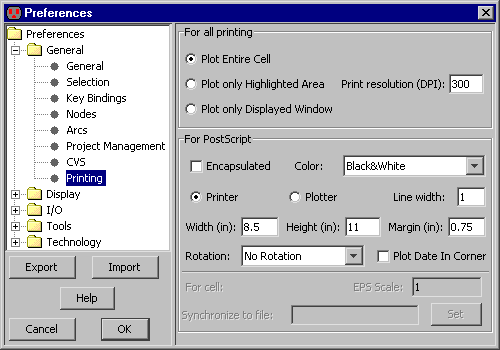

To make a paper copy of the contents of the current window,
use the Print... command (in menu File).
You can use the Page Setup... command for general print settings.
As an alternative to printing, you can request the system to write a PostScript, HPGL, or PNG file.
To do this,
use the PostScript..., HPGL, and PNG (Portable Network Graphics)... commands
(in menu File / Export).
For specific printing and PostScript settings, use the
Printing Preferences (in menu File / Preferences..., "General" section, "Printing" tab).
|
The "For all printing" section at the top has some general options.
The default is to include the entire cell,
but you can choose to print only what is highlighted or only what is displayed by selecting the appropriate buttons.
|  |
Note that when printing the highlighted area,
a precise selection can be made with Area selection
(see Section 2-1-3).
The "Print resolution" is the number of dots-per-inch (DPI) that the printer expects.
Higher resolutions use more memory for the print image.
There are many PostScript options, available in the lower section.
- "Encapsulated" requests that the PostScript output to be insertable in other documents (EPS).
- "Color" offers four color choices: "Black&White",
uses stipple patterns for the layers;
"Color" uses solid colors,
but does not handle overlap (because PostScript does not handle transparency);
"Color Stippled" uses color stipple patterns for better overlap; and
"Color Merged" computes layer overlap and generates blended colors to recreate the appearance on the screen
(this takes time and memory).
- "Printer" and "Plotter" let you specify the size of the page
(choose "Printer" for devices that print onto single pieces of paper,
and "Plotter" for devices that print onto continuous rolls of paper).
The "Margin" field is the amount of white space to leave on the sides.
All distances in the "Height", "Width", and "Margin" fields are in inches.
- "Line Width" controls the width of PostScript lines. Although they default to 1, this may be too thin
on some printers.
- "Rotation" controls rotation of the image by 90 degrees so that it fits better on the page.
The default is "No Rotation", but the popup can switch to "Rotate plot 90 degrees" or
"Auto-rotate plot to fit".
- "Plot Date In Corner" requests that additional information appear in the corner of the plot.
- "EPS Scale" sets the scale factor of the specified cell when it is written as encapsulated PostScript.
-
"Synchronize to file" requests that PostScript files be synchronized with the current cell.
Clicking the "Set" button prompts you for a file name,
which is stored with the current cell.
Whenever you write any PostScript,
Electric checks all synchronized cells to see if they are newer than their associated disk file.
If they are newer, the files are regenerated.
Thus, you can specify PostScript files for many different cells in a library,
and when PostScript is generated, all of the files will be properly updated to reflect the state of the design.